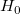と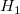が排反であるとすると、ベイズの定理より
| 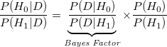 | (8.58) |
を導ける。 つまり、
| 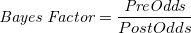 | (8.59) |
とも表せ、データを得ることによって、仮説の確からしさがどれだけ変化したかを評価する量となる。
*** .01 ** .1 * .31251 x 3.2 * 10 ** 100 *** |
決定的 強い かなり あまりなし かなり 強い 決定的 |
| 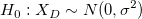 | (8.60) | ||
| 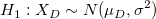 | (8.61) |
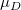と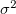それぞれに事前分布を設定
母集団効果量 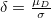 に事前分布を設定1
| 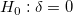 | (8.62) |
対立仮説について、標準化された指標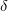が完全に無情報な一様分布に従うと考えるのはムリがあるので、
| 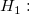 | 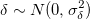 | (8.63) | ||
 |
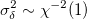 | (8.64) |
超事前分布の設定については Zellner & Siou (1980) に従う。
ベイズファクターの計算は積分を含むため複雑なのだが、Rouder, et al. (2009) がwebプログラムを公開している2。
事前分布の設定によって結果が大きく変わりうる（事前情報がない場合のJeffreysの事前分布や、無情報事前分布など、唯一の方法はない。）
Hoijtink et al. (2008) の情報仮説によるアプローチも有望
Footnotes